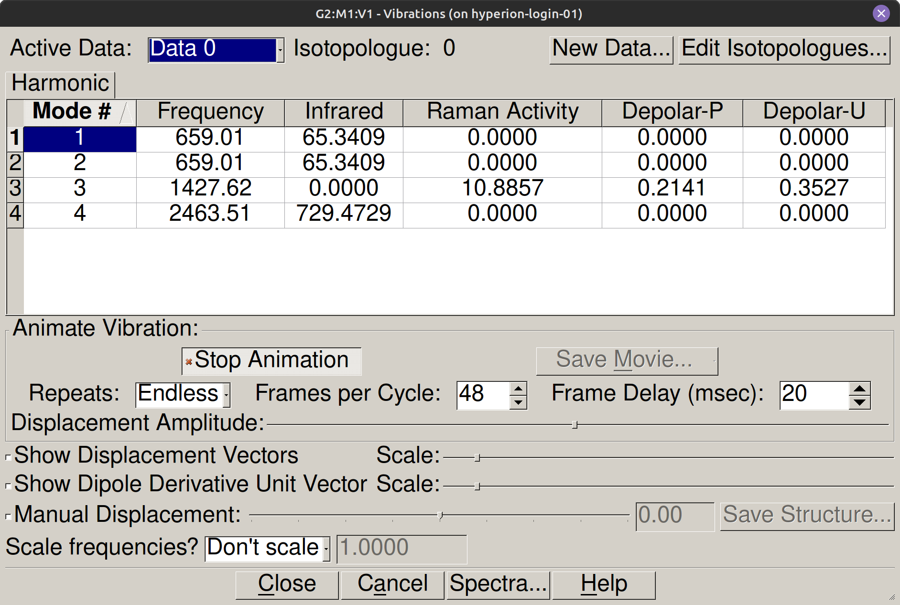
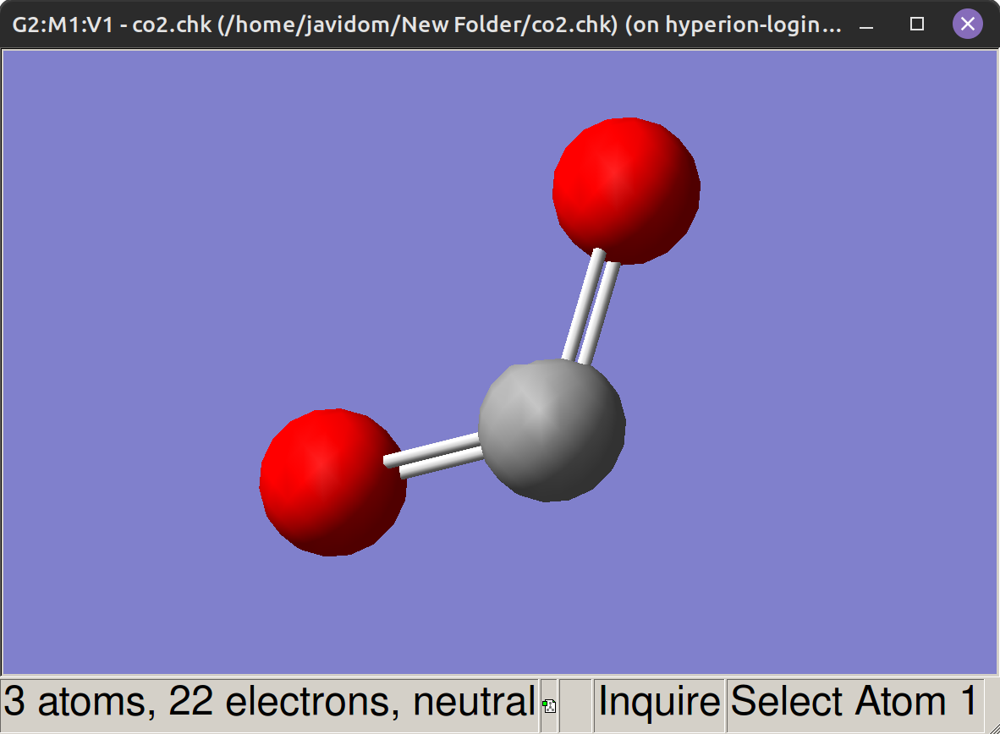

Modos normales de vibración#
Introducción#
La absorción de radiación infrarroja surge de la interacción entre el campo electromagnético y las vibraciones nucleares. Para modelar este fenómeno, Gaussian calcula las frecuencias vibracionales diagonalizando la matriz hessiana de la energía potencial, lo que descompone el movimiento molecular en oscilaciones armónicas independientes. El análisis de los modos normales resultantes proporciona las frecuencias teóricas, permite visualizar los desplazamientos atómicos en GaussView y determina su actividad en el espectro infrarrojo según las reglas de simetría molecular.
Objetivos#
Calcular los grados de libertad vibracionales independientes de moléculas lineales modelo (\(\text{CO}\) y \(\text{CO}_2\)).
Optimizar la geometría molecular y calcular las frecuencias armónicas mediante el método combinado
Opt+Freqcon B3LYP/6-311G.Visualizar y clasificar los desplazamientos atómicos correspondientes a modos de estiramiento y flexión mediante animaciones en GaussView.
Evaluar la actividad espectral en el infrarrojo comprobando la variación del momento dipolar molecular (\(\partial \vec{\mu}/\partial Q\)) y el valor de intensidad calculada (
IR Inten).Comparar las frecuencias armónicas teóricas con las bandas de absorción experimentales para cuantificar el efecto de la anarmonicidad.
Conceptos clave#
Las moléculas vibran: modelo del oscilador armónico#
En la aproximación armónica, los núcleos oscilan en torno a la geometría de equilibrio como un oscilador mecánico. Cuanto más rígido es el enlace (mayor constante de fuerza \(k\)) y cuanto menor es la masa reducida \(\mu\) de los átomos implicados, mayor es la frecuencia de la vibración:
Para una molécula diatómica compuesta por masas \(m_1\) y \(m_2\), la masa reducida se define como:
Gaussian obtiene las constantes de fuerza calculando las segundas derivadas de la energía respecto a los desplazamientos nucleares en el mínimo de la PES.
Nota
Gaussian calcula las constantes de fuerza mediante las segundas derivadas de la energía potencial respecto a los desplazamientos nucleares (matriz hessiana) en la geometría optimizada. Esta aproximación trunca el desarrollo en serie de Taylor en el término cuadrático y asume un potencial armónico ideal. Como los enlaces moleculares reales presentan anarmonicidad a mayores distancias internucleares, las frecuencias calculadas suelen sobreestimar de forma sistemática los valores experimentales obtenidos por espectroscopía infrarroja.
Modos normales y grados de libertad vibracionales#
En cada modo normal, todos los núcleos de la molécula oscilan en fase y a una única frecuencia característica. Descontados los 3 grados de traslación del centro de masas y los de rotación (2 en moléculas lineales y 3 en no lineales), el número de vibraciones fundamentales posibles para \(N\) átomos viene dado por:
La diagonalización del hessiano en coordenadas de masa ponderada proporciona directamente estas frecuencias y los vectores de desplazamiento nuclear asociados a cada modo.
Reglas de selección en espectroscopía infrarroja#
Un modo de vibración absorbe radiación infrarroja únicamente si el movimiento nuclear produce una variación neta del momento dipolar molecular en el entorno del equilibrio:
En moléculas simétricas, algunos modos conservan la simetría de inversión durante la vibración y no alteran el dipolo: son modos inactivos en IR. En el caso extremo, la molécula de \(\text{H}_2\) no tiene ninguna banda IR activa: su dipolo permanente es nulo y la vibración de estiramiento tampoco lo altera, por lo que el espectro infrarrojo es completamente silencioso. En el archivo .log, la actividad de cada modo queda recogida en el campo IR Inten: un valor nulo indica inactividad.
Nota
La absorción de radiación infrarroja requiere que el movimiento vibracional altere el momento dipolar molecular (\(\partial \vec{\mu}/\partial Q \neq 0\)). En el estiramiento simétrico del \(\text{CO}_2\), la simetría de inversión se conserva y la variación neta del dipolo es nula, por lo que el modo no se acopla con el campo electromagnético incidente. En el archivo .log, esta inactividad se manifiesta con un valor de intensidad infrarroja (IR Inten) de 0.0000.
Requisito operativo: optimización previa de geometría#
El cálculo de frecuencias requiere que la geometría de partida sea un mínimo real de la PES, porque las derivadas segundas solo tienen significado físico en un punto estacionario. Si la geometría no está optimizada, algunos autovalores del hessiano resultan negativos y aparecen frecuencias imaginarias en el .log, sin interpretación vibracional válida.
Advertencia
Es imprescindible optimizar la geometría antes de calcular frecuencias. El cálculo sobre geometrías no estacionarias genera frecuencias imaginarias carentes de significado físico. En esta práctica se emplea la opción combinada Opt+Freq para garantizar que el cálculo vibracional parte del mínimo exacto.
Procedimiento#
Paso 1: Construir CO en GaussView#
Construir la molécula de CO y aplicar Edit → Clean para obtener una geometría inicial razonable.
Paso 2: Configurar el cálculo combinado Opt+Freq#
Acceder al menú Calculate → Gaussian Calculation Setup.
En la pestaña Job Type, seleccionar la opción Opt+Freq. Comprobar que en la parte inferior quedan activadas simultáneamente las tareas de optimización de geometría y cálculo de constantes de fuerza armónicas.
En la pestaña Method, configurar los parámetros de cálculo:
Campo |
Valor |
|---|---|
Job Type |
Opt+Freq |
Method |
|
Basis Set |
|
Charge |
0 |
Spin (Multiplicity) |
1 |
En la pestaña Title, escribir una descripción identificativa.
Paso 3: Guardar y lanzar#
Pulsar Submit, guardar el archivo como
CO_opt_freq.gjfen{{practicas_folder}}ModoNormales/y confirmar el envío.
Paso 4: Leer la distancia de enlace optimizada#
En GaussView, abrir el
.logresultante mediante File → Open y acceder a Results → Optimization para situarse en el último fotograma.Seleccionar los dos átomos para leer la distancia C–O en la barra inferior, o bien buscar
! R1 R(1,2)en el.logcon Ctrl + F.
Nota
El cálculo B3LYP/6-311G reproduce la distancia experimental del CO con buena precisión. El valor de referencia calculado es \(R(\text{C-O}) = 1.1473\) Å, frente al valor experimental de 1.128 Å; la diferencia refleja la sobreestimación sistemática de las distancias de enlace propia de los funcionales DFT con bases moderadas.
Paso 5: Extraer parámetros vibracionales del .log#
Buscar Frequencies -- en el .log con Ctrl + F. Para cada modo, anotar:
Frequencies --: frecuencia vibracional en \(\text{cm}^{-1}\).Red. masses --: masa reducida en uma.Frc consts --: constante de fuerza en mdyne/Å.IR Inten --: intensidad de absorción en km/mol.
Paso 6: Visualizar la animación del modo normal#
En GaussView, con el archivo
CO_opt_freq_B3LYP_6311G.logabierto, acceder al menú Results → Vibrations.En la lista de modos normales, seleccionar la fila correspondiente a la frecuencia calculada (2063 \(\text{cm}^{-1}\)).
Activar la casilla Start Animation para observar el movimiento oscilatorio de los núcleos.
Marcar la casilla Show Vectors para visualizar las flechas de desplazamiento nuclear y comprobar que los átomos se mueven a lo largo del eje del enlace (modo de estiramiento).
Comprobar la amplitud relativa de las flechas: el átomo de carbono, al ser más ligero, experimenta un desplazamiento mayor que el de oxígeno.
Paso 7: Repetir el procedimiento para CO₂#
Construir CO₂ en GaussView y aplicar Edit → Clean para obtener la geometría lineal O=C=O.
Configurar el cálculo con los mismos parámetros (B3LYP/6-311G, Opt+Freq, carga 0, multiplicidad 1). Guardar como
CO2_opt_freq.gjfy lanzar.Una vez completado, abrir el archivo
.chko.logen GaussView y acceder al menú Results → Vibrations.Animar cada uno de los cuatro modos normales y anotar sus frecuencias e intensidades. Relacionar la actividad IR de cada modo con la variación del momento dipolar que provoca la vibración.




Bibliografía#
Gaussian 16, Revision A.03, M. J. Frisch, G. W. Trucks, H. B. Schlegel et al., Gaussian, Inc., Wallingford CT, 2016.
Atkins, P.; De Paula, J. Química Física, 10ª ed.; Editorial Médica Panamericana, 2018. Cap. 12 (Espectroscopía vibracional).
NIST Chemistry WebBook, https://webbook.nist.gov (datos experimentales de frecuencias vibracionales para CO y CO₂).
Para ir más lejos (opcional)
El espectro infrarrojo del CO en fase gas muestra, además de la banda fundamental, una estructura de líneas finas debida al acoplamiento entre vibración y rotación. Midiendo la separación entre líneas adyacentes de las ramas P y R (\(\Delta\tilde{\nu} \approx 2B\)) podemos determinar el momento de inercia de la molécula y, a partir de él, la distancia de equilibrio C–O con precisión espectroscópica. Los datos de referencia están en el NIST Chemistry WebBook.